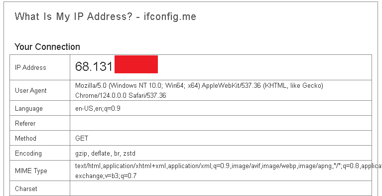

Have you ever wanted to route a device's traffic over a VPN but could not install a VPN client on that device? Lets call this "Device A." It is possible to route Device A's traffic to a computer (Device B) where the VPN client is installed. Device B will send traffic from Device A to the VPN server and recieve traffic from the VPN server and send it back to Device A.
Preparing a Proxmox Container to be the VPN Server
By default, Proxmox Containers can not be a VPN Server or Client because they do not have tun adapters. As a result, they need to use the Proxmox host's tun adapter. After creating the OpenVPN container using the Proxmox GUI, I folowed this guide from Proxmox on how to configure an OpenVPN server in Proxmox. Specifically, I copied the following code into /etc/pve/lxc/123.conf:
lxc.cgroup2.devices.allow: c 10:200 rwm
lxc.mount.entry: /dev/net dev/net none bind,create=dir
The next step in the guide is to run chown 100000:100000 /dev/net/tun and check the permissions with ls -l /dev/net/tun. The results should be:crw-rw-rw- 1 100000 100000 10, 200 Dec 22 13:26 /dev/net/tun
Here is my final configuration file for the OpenVPN container:
Start the container.
Configuring the VPN Server
I used Nyr's openvpn-install repository to setup the VPN server. I am hosting the VPN on a Proxmox LXC container in my house.
The commands I ran to download the GitHub repository with the OpenVPN install script.
The install script prompts for the configuration of the server and the first client configuration.
The first client configuration is created in the /root/ directory.
Configuring the VPN client
Transfer the output VPN configuration to a second (Linux) computer (I used SCP). Install OpenVPN on it by running sudo apt update && sudo apt install openvpn and accept the packages to be installed.
The first thing you need to do is enable IP forwarding on the Linux system. Do so by editing the system configuration file with nano /etc/sysctl.conf. Find the line containing net.ipv4.ip_forward and set it to 1. Finally, run sysctl -p to reload the configuration.
After that, you need to make rules in the computer's routing table to route traffic over the VPN. I used iptables to pass traffic from a subnet of IPs over the VPN with the command (as sudo) iptables -t nat -A POSTROUTING -s 192.168.1.240/28 -o tun0 -j MASQUERADE.
Finally, go to the computer which you want to route it's traffic over the VPN. Give it an ip address in the range you defined (192.168.1.240/28 for me) and the default gateway to the IP address of the client computer.
IP configuration to route traffic over the VPN
End Result
IP address before doing the IP configuration
IP address after doing the IP configuration
Sources
https://pve.proxmox.com/wiki/OpenVPN_in_LXC
https://github.com/Nyr/openvpn-install
https://linuxconfig.org/how-to-turn-on-off-ip-forwarding-in-linux
Extras
It is also possible to route traffic for certain destination IP addresses through the VPN while leaving the rest not going through the VPN.
You can either edit the routes per VPN client or change them for every VPN client through the VPN server configuration. I chose to edit the server configuration.
Edit the /etc/openvpn/server/server.conf and comment these lines:
#push "redirect-gateway def1 bypass-dhcp"
#push "dhcp-option DNS 192.168.50.151"
#push "block-outside-dns"
They are responsible for routing all traffic through the VPN.
Next, add these line(s):push "route 34.117.118.44 255.255.255.255" (34.117.118.44 is the IP address for https://ifconfig.me). If you want to edit each client configuration file, add route 34.117.118.44 255.255.255.255 to each one. Restart the OpenVPN server by running sudo systemctl restart openvpn.service. You may need to restart the VPN on the client.
Results
Because the IP address for https://ifconfig.me is being routed through the VPN, the IP address it shows will be the WAN address of the VPN server. Any other website will view the WAN address as the one where the computer is.
Visiting ifconfig.co shows the 46.10.x.x IP address
Visiting ifconfig.me shows the 68.131.x.x IP address